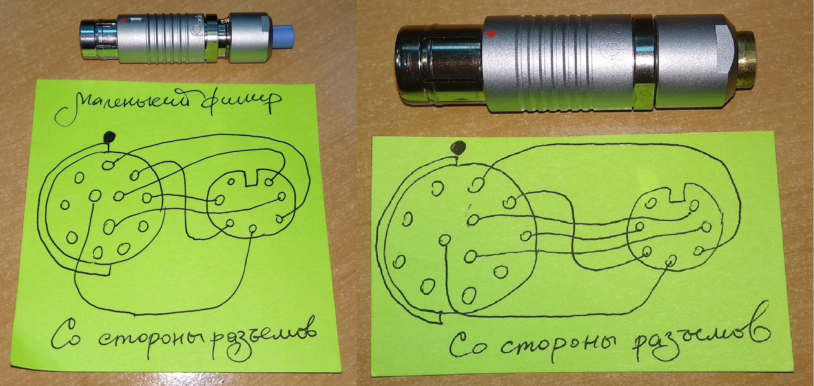

БДКГ-22/23. Подключение
Я подключаюсь таким периходником: 
Включить программу BDKG-22 Utility. Настройки для подключения:
- Выбрать номер com порта с подключенным Usb-com адаптером
- Скорость — 19200
- Адрес БД — всегда 1
- Четность — EVEN
Эти настройки являются настройками по-умолчанию, привожу их просто "на всякий случай". Вот так выглядит программа в простом режиме:
Некоторые датчики подключаются с другими настройками (например №: 4, 8, 36, 37, 39, 41):
- Скорость — 1200
- Адрес БД — всегда 1
- Четность — NONE
После того, как БД подключится, нажать "Старт".
В окне программы сразу же появятся данные. Для работы с БД и для его настройки необходимо перейти в "Advanced
Mode".
Для этого необходимо набрать на клавиатуре слово serial.
Вот так выглядит программа в этом режиме:
 Для разблокировки кнопок управления — еще раз набрать слово serial.
Для разблокировки кнопок управления — еще раз набрать слово serial.